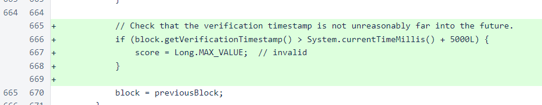
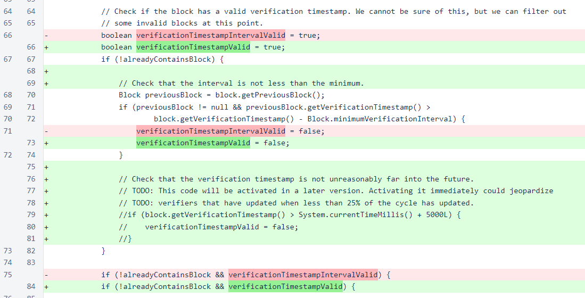

Nyzo version 506 (commit on GitHub) adds a protection against future verification timestamps that could stall blockchain processing.
This version affects the verifier only.
Previously, a minimum gap was enforced on verification timestamps, but no maximum was enforced. If a malicious verifier or a verifier with an incorrect clock produced a block with a timestamp far in the future, this could cause the blockchain to stall until the timestamp of that block. Such a stall could be remedied by manually removing the block, and any verifier that sent such a block would certainly be forcibly removed from the cycle for such behavior, but this is a situation we want to avoid.
This version enforces a maximum verification timestamp relative to the current system time. In the chainScore() method of the Block class, blocks with verification timestamps more than 5 seconds in the future are assigned invalid scores.
In the registerBlock() method of UnfrozenBlockManager, the same check will be performed to prevent blocks with future timestamps from being accepted at all. This will be a welcome redundancy to the invalid score that is assigned to such blocks. However, this code will not be activated until at least 25% of the cycle has updated to version 506 or later. If it were activated immediately, blocks with near future timestamps could be used maliciously to interfere with the ability of upgraded verifiers to properly track the blockchain.
